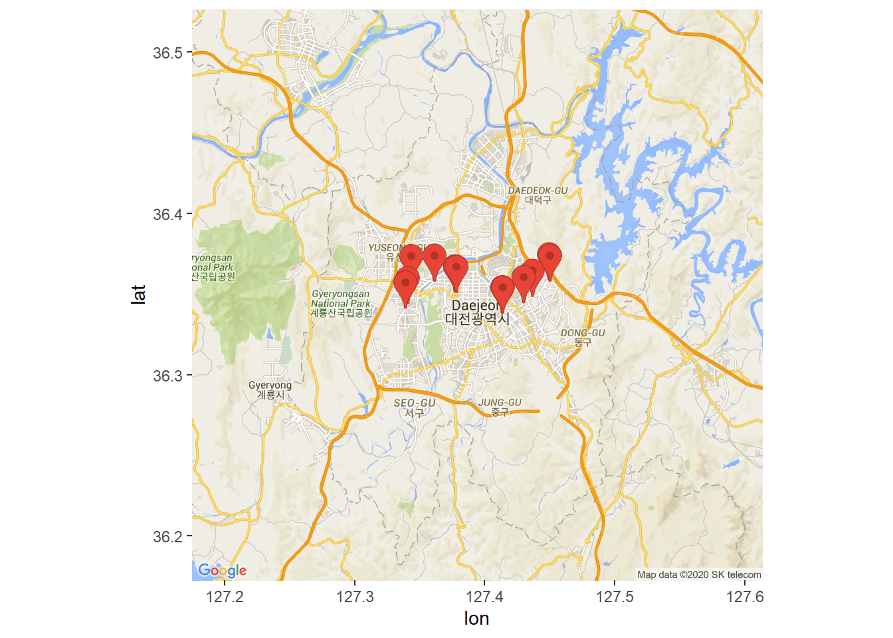
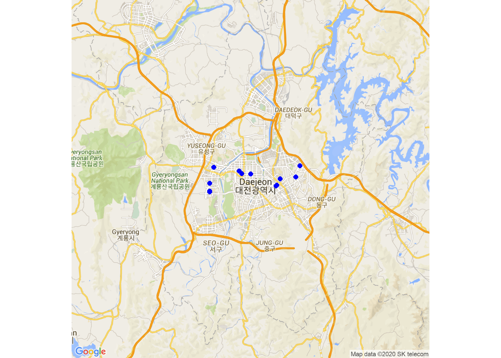
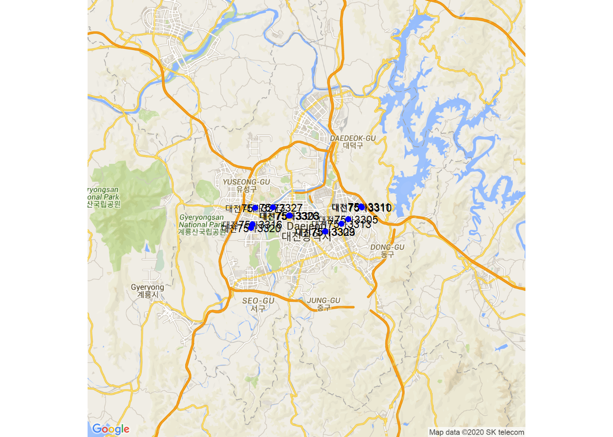
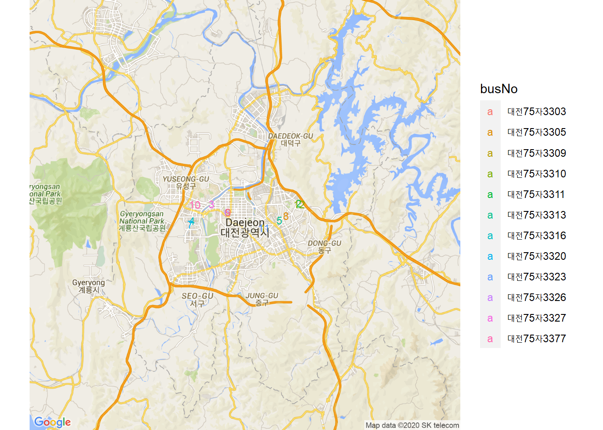

Chapter 5 실시간 버스 위치의 시각화
이제 다운받은 노선버스의 실시간 위치 정보를 이용하여 Google 지도에 시각화한다.
즉, 구글 맵에 버스 위치를 표시해 보기로 한다.
패키지 불러오기
library(XML)
library(ggmap)
library(tidyverse)5.1 실시간 위치를 Marker로 표시하기
5.1.1 Google API 인증
register_google(key="API Key") # https://console.cloud.google.com 에서 확인5.1.2 버스 위치의 중심점 찾기
data <- read_rds("data/bus_location.rds")
gc <- data[, 2:3] # lon, lat 컬럼만 추출
cen <- sapply(gc, mean) # 차량위치의 중심점5.1.3 구글 지도 정보 가져오기
get_googlemap() 함수를 이용하여 구글 지도 정보를 가져온다. 그 결과는 map에 대입한다.
map <- get_googlemap(center = cen,
maptype = "roadmap",
zoom = 11,
marker = gc)## Source : https://maps.googleapis.com/maps/api/staticmap?center=36.349771,127.393897&zoom=11&size=640x640&scale=2&maptype=roadmap&markers=36.339042,127.41282%7C36.359366,127.449027%7C36.358659,127.360578%7C36.344763,127.340203%7C36.345169,127.429397%7C36.351976,127.376572%7C36.341909,127.338481%7C36.349086,127.436182%7C36.351736,127.377477%7C36.358131,127.342915%7C36.338852,127.413375%7C36.358564,127.44974&key=xxx5.1.4 구글 지도 그리기
이제 버스의 위치를 구글 지도위에 marker로 표시한다.
ggmap(map)
# , extent="device")5.2 차량의 현지 운행 지점을 점으로 찍기
5.2.1 지도 정보 가져오기
map1 <- get_googlemap(center = cen,
maptype = "roadmap",
zoom = 11)## Source : https://maps.googleapis.com/maps/api/staticmap?center=36.349771,127.393897&zoom=11&size=640x640&scale=2&maptype=roadmap&key=xxx5.2.2 차량 위치를 점으로 찍기
ggmap(map1, extent="device") +
geom_point(data = data, # 분석용 데이터 세트
aes(x = lon, y = lat), # 경도, 위도 등의 위치
size = 2, # 점의 크기
colour='blue') # 점의 색깔
5.2.3 지도위에 버스 번호 표시하기
geom_text() 함수를 이용하여 data$busNo``를label` 인수의 값으로 입력해 준다.
ggmap(map1, extent="device") +
geom_text(data = data, # 분석용 데이터 세트
aes(x = lon, y = lat), # 경도, 위도 등의 위치
size = 3, # 글자 크기
label = data$busNo) +
geom_point(data = data, # 분석용 데이터 세트
aes(x = lon, y = lat), # 경도, 위도 등의 위치
size = 2, # 점의 크기
colour='blue') # 점의 색깔
5.2.4 운행 중인 차량번호를 범례로 표시하기
geom_text() 함수의 aes() 내의 colour 인수와, label 인수를 다음과 같이 조정해 주면, 운행중인 차량 번호를 범례로 표시해 준다.
대신에 차량의 위치를 나타내는 점은 찍지 않는다.
이제 차량의 위치가 번호로 표시되고, 그 위치의 차량 번호가 범례로 표시된다.
ggmap(map1, extent="device") +
# geom_point(data=data, # 현재 위치 점찍기
# aes(x=lon, y=lat),
# size = 2,
# colour='blue') +
geom_text(data=data,
aes(x=lon,y=lat, colour=busNo),
size=3,
label=seq_along(data$busNo)) 